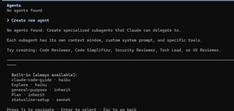

How I Use AI Coding Agents Without Burning Tokens or Trusting Them Blindly
By Sukalyan RoyPublished Updated 11 min read

TL;DR #
-
I use coding agents as accelerators, not as authorities.
-
The smaller the task and clearer the context, the better the result.
-
I avoid dumping an entire repo into the prompt unless the task actually needs it.
-
I verify outputs with tests, diffs, type checks, and my own reading.
-
The best workflow is constrained delegation.
Workflow status
This is my current personal workflow for using AI coding agents. It will change as the tools improve, but the core habit will stay the same: give them bounded work and verify the result.
In the last post about RAGs we went through some basic ways of finding similarities in texts, but it's quite obvious that it's a far cry from all the sophisticated ways in which AI works right now.
So... what's the difference?
The difference lies in two things:
-
Effective organization of knowledge-base and ways to communicate with it
-
Usage of proper prompts and existing AI features, so that you don't have to reinvent the wheel.
This post will be a preface to all the proper Prompting Best practices, and then the actual Proof of concept pipeline shall be made in the next post.
Even if you don't work on RAG directly, you will still find several ways to supercharge your workflow using the methods discussed in this post.
The point of using AI is not to completely outsource every possible work to it. The point is to make sure that you never start from a completely Blank canvas.
Where to begin? (Agentic AI) #
Here we will learn what Agentic AI is, what are the major versions of it all and how to make the best use of all of them.
Agentic AI is just a buzzword that essentially means that AI has a certain degree of autonomy in actually doing things, and interacting with things around them, rather than just sending and receiving messages.
They can analyse a codebase, or a pdf, or an image, and then actually apply patches or create document files and more.
And depending upon the permissions you give them, they can do significantly more on their own than what you would expect.
The Prompts #
Apart from the per session chats themselves, there is a hierarchy of prompts in every CLI Agentic AI tool.
First you have the Global Prompt, then the project specific prompt, and then the use case wise specific skills that you add or remove.
An important thing to remember is that most different "modes" and skills everywhere is just another Prompt that repeatably achieves similar tasks.
The lowest hanging fruit in getting good results from AI is to understand this prompt hierarchy and have these setup as early as possible.
Have a good global prompt, you can even leave it code specific if you only use these AI for your coding work. But maybe try to make it more generic if you plan on using it for other tasks as well.
Then remember to use the init command in every major project. That is also simply a prompt that asks the AI to analyse the codebase and create a document that makes understanding it easier for the AI in the future.
But interestingly enough, that is also pretty good as a summary doc for quick onboarding or refreshing your memory if you seem to forget general ideas about the project.
This is also an important observation that, the closer AI gets to reasoning and conceptualizing things the way humans do, the more unified these optimizations will become. Anything that makes life easier for AI will also help us directly and might, in time, encourage us to do more without AI, just for the fun of it.
Spawning Agents #

There is a feature in Claude (at the time of writing i didnt see it elsewhere) where you can manually create and run multiple agents, each with it's own specific agenda and task.
Overall in my exploration, I have felt like this is only useful if you have near unlimited token budget and can spam workflows a lot.
| Task type | How I use the agent | How I verify it |
|---|---|---|
| Small bug | Give the exact file, symptom, and expected behavior | Run the failing case and inspect the diff |
| Refactor | Ask for the smallest behavior-preserving change | Run tests and check public interfaces |
| New feature | Ask for a plan first, then implementation | Test happy path, edge cases, and integration points |
| Explanation | Ask it to cite files/functions, not just summarize | Open the referenced code myself |
Most of the Agentic AI workflows actually work under the assumption that prompt cost is not a factor, that lines of code is a useful metric and that as long as we can optimize for memory under long workflows, we can essentially prompt loop our way to success.
I don't have unlimited tokens, so all of that goes out of the window. All of my paid token access also comes from my workplace so that's even more reason why I cannot directly stuff them into something like Openrouter.
There's an interesting balance to be maintained to not exhaust the whole team's daily credits just because I was too lazy.
And to add to this, the latest models will spawn their own subagents in a more optimal way during a prompt anyways, and that can usually get the job done well enough.
How to pick the right model and effort level? #
This is extremely experience based, but for my own uses, i have observed the following:
The common wisdom goes that you should use lower end models for simple things and higher end models for complicated tasks, but this can be very inefficient in practice.
Grouping together several small tasks and having the best model do it on high effort, often one shots the entire thing, saving you both time and tokens(in the long run).
But if you use lesser models, you will need multiple prompting or some way to loop the prompting, and in almost all cases i have observed that it ends up using more tokens before giving me an acceptable solution.
So, in summary, collect all your tasks, craft a proper context and feed it all at once to the best model you have available. Save yourself time and energy. Even if you can run 3 such prompts per day, if a single prompt can finish your day's work, mission accomplished.
And often I have observed that if the tasks are truly small, even at extreme high effort, very few tokens are used as the whole thing is resolved.
Importance of context management #
Most sources agree that the more stuffed your context window is, the worse is the quality of the responses. If you have gone through the transformers explanation i wrote in a previous article, you might guess the reason why. (Hint: There's a limit to how far the attention heads can be while still being relevant)
Some strict guidelines want us to keep the context no more than 40% of the limit, though i have seen decent performance even upto 75% filled. Anything beyond and it gets a bit goofy.
Essentially though, there are plenty of features in every major tool to fix this.
The idea is regular compression/summarization of the chat.
Some tools allow automatic compression and some have an option to do it manually.
These options often work better than telling the AI to summarize everything manually via a human prompt.
What are skills? #
Another fancy term for prompts. That's literally it. Rarely anyone uses the provided but optional script options. Almost all skills are just prompts. And if you have a good global and project specific prompt then you don't need anything else.
You can even use your project specific prompts as skills if the same requirements are needed in multiple places but not fully globally.
Summary of certain methods #
The following comes straight from my notes that i made a couple years ago, at a time where prompt engineering was an actual thing you could practice and not just another way of overcomplicate simple ideas.
One thing to note is that, a lot of the ideas that we'll go through will be partially obsoleted by newer models that try to integrate them natively within their workflows.
But just as learning low level stuff helps us build things better in our day to day lives, here as well, learning about some of these legacy ways of doing things will help us understand how the new features might be working in the upcoming updates of the models themselves.
-
Few shot prompting.
When we ask the AI to do something for us with no examples, that's 0-shot prompting. When we give one example that's 1-shot prompting and more than one examples is Few shot prompting. The more examples we give, the more "consistent" the outputs become.
-
Chain of thought Prompting
This relatively recent alternative to Few shot prompting is done as follows:
You pose a question and give it's answer, but this time you explain the answer with reasoning just like a human. Then you ask your another question of the same type and let the AI come up with an answer. This method has been observed to be successful only when the model is larger than 100 billion parameters. -
Zero shot Chain of thought
When coming up with few shot explanations for A given question is difficult, we can add the following to the end of prompt, to get a better but still not as good as CoT response: "Let's think step by step"
-
Make the AI come up with reasoning.
When you are short on explanations but want a proper CoT prompt, tell the AI to list facts for you, and then use them as the explanations for your CoT. -
Write "Show me only the code" for simple prompts so that the verbosity of it's explanations doesn't slow the responses.
-
Make it write test cases for everything.
-
Unit tests can also serve as examples. Before writing your function, you can use Copilot to write unit tests for the function. Then, you can ask Copilot to write a function described by those unit tests.
Conclusion #
This was my attempt to codify some of the best practices, but even for me it's a continuous learning process.
If you use coding agents differently, I am especially interested in the verification part. The prompt is less important than how you catch the model when it is confidently wrong.
Check out the next post in this series: here
References #
https://www.philschmid.de/agentic-pattern
https://alexlavaee.me/blog/atomic-workflow/
https://blog.oguzhanatalay.com/why-your-ai-agent-needs-a-constitution
https://resources.anthropic.com/hubfs/The-Complete-Guide-to-Building-Skill-for-Claude.pdf?hsLang=en
Bonus #
Here's what Chatgpt thinks about Prompting Best practices:
Here’s a brutally concise, battle-tested prompting cheatsheet — refreshed from the OpenAI Platform + Cookbook guides and distilled with key additions from Learn Prompting.
Mantra: Constrain + Context + Chain + Check.
Core Moves (do These Every time) #
-
State goal + audience first (what, who, success criteria). Keep it in the first 1–2 lines. (OpenAI Cookbook)
-
Assign a role to anchor expertise/tone (“Act as a senior {role} who {domain}”). (OpenAI Cookbook)
-
Paste concrete context (facts, tables, excerpts). Prefer reference text over “use your knowledge.” (OpenAI Cookbook)
-
Constrain the format (sections or strict JSON schema). Tell the model to validate JSON. Use clear delimiters around context. (OpenAI Cookbook)
-
Make requirements testable (length, tone, must-include/avoid, eval rubric). (OpenAI Cookbook)
-
Few-shot right: include 1 good example + 1 near-miss to define the boundary. (OpenAI Cookbook)
-
Handle uncertainty: ask for 2–3 assumptions before the answer; allow “unknown/can’t verify” for non-obvious claims. (OpenAI Cookbook)
-
Chain complex work: split into sub-tasks → order → pass intermediate outputs → iterate. (Cookbook’s recommended workflow & prompt organization.) (OpenAI Cookbook)
-
Prefer light-weight rationale: request assumptions or a brief plan, not wordy hidden reasoning; long CoT increases tokens/latency. (OpenAI Cookbook)
-
Iterate explicitly: “Propose 3 options → I pick → expand winner.” Build quick evals and refine. (OpenAI Cookbook)
Ultra-short Universal Template #
You are an expert {ROLE}. Task: {WHAT}.
Audience: {WHO}. Constraints: {TONE, LENGTH, MUST-INCLUDES}.
Use ONLY this context:
---
{PASTE DATA/NOTES}
---
Output format: {MARKDOWN sections or JSON schema}.
Before answering: list 3 assumptions + any missing info. If data is missing, proceed with minimal reasonable defaults and flag them.(From Platform/Cookbook patterns: clear instructions, delimiters, explicit formatting.) (OpenAI Cookbook)
Minimal JSON Schema (copy-paste) #
Return valid JSON only:
{
"summary": "≤120 words",
"key_points": ["", "", ""],
"risks": [{"item":"", "mitigation":"", "owner":""}],
"next_actions": [{"step":"", "due":"", "owner":""}]
}
If any field is unknown, use "" and list it under "assumptions".(Pairs schema+validation with instruction-following best practices.) (OpenAI Cookbook)
Chains & Patterns That Work #
-
Collect → Analyze → Conclude (3 steps with explicit criteria). (OpenAI Cookbook)
-
Reason-lite prompts: ask for assumptions/plan bullets instead of full step-by-step traces. (Helps control verbosity and cost.) (OpenAI Cookbook)
-
Few-shot CoT only when needed (math/logic): try “Let’s think step by step” or a single worked example; consider contrastive/auto-CoT variants. (Learn Prompting)
Fix Common Failures Fast #
-
Vague → add length, tone, must-include items. (OpenAI Cookbook)
-
Hallucination → attach source snippets; require citations/“can’t verify.” (OpenAI Cookbook)
-
Over-verbose → set hard token/word caps and “no filler.” (OpenAI Cookbook)
-
Format drift → restate schema at end; tell model “validate JSON.” (OpenAI Cookbook)
-
Long context → put instructions at top (and optionally repeat at end). (OpenAI Cookbook)
Image Prompts (one Line That Covers 95%) #
Subject, environment, composition/angle, lighting, style/era/lens, fine details/materials, aspect ratio, negatives (“no text/watermark/blur”). (LP’s image-prompting modules emphasize subject + parameters like aspect ratio.) (Learn Prompting)
Tiny “best-of” Prompts You Can Reuse #
1) Universal task prompt
You are an expert {ROLE}. Task: {WHAT}. Audience: {WHO}.
Constraints: {LENGTH, TONE, MUST-INCLUDES/EXCLUDES}.
Use ONLY this context:
---
{DATA}
---
Output: {sections|JSON}. Before final answer: 3 assumptions + missing info.2) Few-shot with guardrails
Good → {tight exemplar}
Near-miss → {what to avoid + why}
Follow the good pattern. Do NOT copy wording.3) Iterative refinement (built-in loop)
Step 1: Propose 3 distinct options (bullets).
Step 2: Wait for my choice.
Step 3: Expand the winner to {N} words with examples and sources.4) Image (text-to-image) one-liner
Subject, Environment, Composition, Lighting, Style, Details, Aspect (e.g., 3:2), Negatives (no text/watermark).Why Trust These Moves? #
They’re aligned with OpenAI’s official Prompt Engineering/Instruction-Following guidance (structure, delimiters, iteration) and Learn Prompting’s taxonomies and CoT/image-prompt techniques. Use them as defaults, then A/B prompt variants against a small eval set. (OpenAI Cookbook)
If you want, I can turn this into a 1-page printable card or add task-specific mini-prompts (e.g., analyst, marketer, tutor).